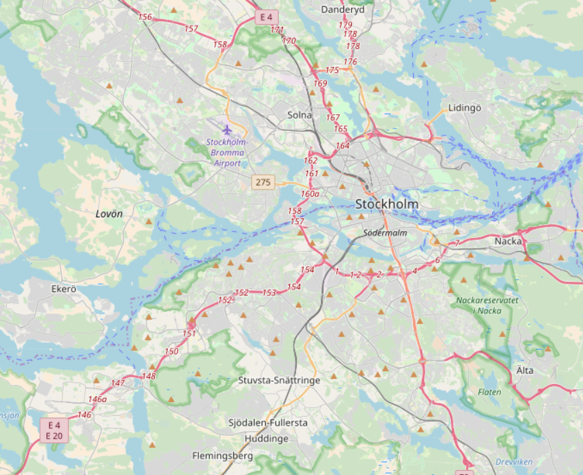

This year is KTH campus' 150th anniversary, and now KTH has grown into 5 campuses in Stockholm city and suburbs.
Description of the motivation
Due to intensively collaborations between the growing campuses KTH, KI, Södertörn University as well as between the companies based in Södertälje on the south side of Stockholm city leads to increasing emissions due to logistics operations. Despite that transport operations hardly find people's attention, the design of campus logistics impacts on health, well-being and the general environment without the lack of every student, faculty members and service providers on daily basis. However, there is little knowledge available regarding the student och employee passenger flows and logistical activities between the main campus and south campuses.
Description the current practices and situations of campus commuting
Since the inaugmentation last October, two south campuses, KTH Södertalje and KTH Flemingsberg, have been established for the education and research activities. At the moment and now, there is discussion about dedicated minibus connecting south campuses to other campuses. Shuttle bus towards Kista has recently been closed, but we see the potential of the Swedish 'godsbussar' concept for passengers and goods delivery. It is therefore valuable to know current demands of travel and delivery, and again look into the possible implementation of the Swedish 'godsbussar'.

This survey collects students, university employees and researchers' attitudes towards mobility between south campuses of KTH and other campuses in different places in Stockholm. The geographical coverage includes the main campus, KTH Kista, KTH Flemingsberg, KTH Södertalje and KTH Albanova, as well as road, public transport links in between. It is part of a KTH project on sustainable campuses aims for efficient, coherent commuting and logistics network benefiting students, university employees and researchers working for KTH, and is jointly led by School Technology Health, Department of Health Systems Engineering; School of Industrial Management and Engineering, Department of Sustainable Production Development.
The respondents are welcomed to attend the transport survey. We designed this survey, formulated the contents in our best way to collect mobility demands of students and university employees in south campuses, but other interested individuals are also encouraged to share their choices. Your responses are treated with 100% confidentiality. The identity will be hidden from any third parties' point of view.
This survey studies people's preferences of mobility service options having different attributes and levels. For respondents that need commuting across different campuses, some of these questions match your situations. However the questions here might appear to be imaginary for those that have no similar experiences before. Nevertheless, your input is very valuable, therefore we hope you go through all the questions and respond according to your true thoughts. The reward of your join is in three parts; first of all you will get 10 SEK as an immediate compensation. Secondly the public version of the technical report as the project dues next June. In case that you are interested in a lottery selection, you can fill in the email/phone contact information below. A couple of ICA presentkort, a gift worth of 500 SEK, supermarket card will be drawn and delivered to your place. The contact information is for distribution of public technical report and informing the lottery results.